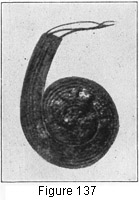
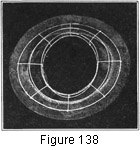

1930—Millinery Processes
by Carlotta M. Brown
STRAW BRAIDS AND HORSEHAIR BRAIDS
STRAW BRAIDS
Brim tops. If both the top and the facing are to be made of the braid, the top is made first. Start the braid 2 inches to the right of the center back of the brim, folding the braid over the edge, with one half extending on each side. Work from right to left, sewing the braid entirely around the edge with stab stitches of even length. When the back is reached for the second time, start a spiral of braid by bringing the loose end of the braid to the top of the brim and sloping gradually to meet the lower edge of the braid already attached (Fig. 135). The stitch now changes to a long-and-short stitch, with the long stitch on the facing side of the brim. In sewing, lap the braid just enough to catch the two edges together securely. The shirr thread at the lower edge of the braid must be drawn up after every row of braid is attached, so that the braid will lie perfectly smooth. Continue around the brim until the narrowest part of it is filled. If it is irregular in shape; fill in all the parts not covered with small lengths of the braid, forming crescent-shaped pieces. Attach the end of the braid to the head-size band when starting and ending the crescent (Fig. 135).
Figure 135. Back of brim made from straw braid, showing the spiral at the back, and the side of the brim with crescent attached to head-size band. Threads shown are those used in pulling braid into place.
Facings. The facing is covered in the same manner as the top, though a slanting stitch is used for attaching the braid. These stitches are concealed between the two layers of braid. The ends of the braid are attached to the inside of the head-size band or the crown.
Combination brims. Straw braid may be used for either the top or the facing of the brim, and piece fabric for the other side. In either case the braid is attached first and the fabric last, so that the stitches holding the braid in place may be brought through the brim and there concealed by the fabric. Additional combinations may be obtained by using the braid for only half of either the facing or the top (see Facings).
Crown covering attached to a fabric foundation. Start the braid at the base of the crown 2 inches to the right of the center back and attach with the long-and-short stitch, making a spiral as in covering the brim (Fig. 135) Continue until the top of the crown is reached (Fig. 136), cut a slash at the crown top, and pull the braid through the opening. This eliminates all bulk at the top of the crown when finishing.
Figure 136. Attaching straw braid to a fabric crown. At left, straw braid started at base of crown, showing spiral at center back. At right, top finish of straw-braid crown.
Crown covering without a fabric foundation. When making a soft crown, it is most convenient to pin the braid into place over a crown block or a fabric crown. In this process, pins are used to hold the braid together while the crown is being modeled on the block; no sewing is done until the modeling is completed. A small running stitch is then used. If neither a block nor a fabric crown is available, a plaque may be started, forming the top of the crown, and the side crown be shaped as the braid is sewed (Fig. 137).
Figure 137. Beginning of braid plaque.
When the top of the crown is covered with a plain fabric, it is put in place first (Fig. 22). The braid is then started at the top of the side crown, 2 inches to the right of the center back, as at the base of the crown, overlapping the raw edges of the fabric top. In this case the braid follows down toward the base of the crown instead of upward to the top. The end of the braid is turned up inside the crown and fastened. The long-and-short stitch is used in attaching the braid throughout, the long part of the stitch placed on the inside of the crown, with the short part of the stitch holding the braid in place.
HORSEHAIR BRAIDS
Transparent braids are usually made over a wire frame, but they may be attached to a solid fabric foundation. The method of attaching is different, however.
Wire brim for a foundation. Two methods of placing braid on the brim are used:
1. Start the braid 2 inches to the right of the center back, letting it extend over the edge for a distance of 1 or more inches, according to the width of the braid and to individual preference. Attach the braid to the circumference wire with a lock stitch, catching into the covering of the wire with the first stitch to hold it securely (Fig. 3). Then make the spiral as in the straw-braid brim covering (see Straw Braids) and use the running stitch for the sewing of the succeeding rows of braid.
2. Start the braid 1 inch to the right of the center back, attaching by the same method as in 1. As the back of the brim is reached, carry the braid past the back wire spoke for a distance of 1 inch (Fig. 138). Then lap the braid flat instead of making a spiral. Each succeeding row is attached in the same way at the base of the one above, lapping only enough to fasten it securely. Any spaces remaining uncovered may be filled in with crescents as with straw braids (Fig. 135).
Figure 138. Transparent brim. Top covering of horsehair braid, showing extension of braid beyond the edge wire, and the two-inch flat braid lapping at the back of the brim.
Over a fabric foundation. Cover the fabric foundation with light-weight material in the same or a contrasting color. Attach the braid in the same manner as in straw-braid covering (Fig. 135).
Crown covering of horsehair braid without a fabric foundation. The braid for the crown should be pinned over a crown block or over a fabric crown, starting at the base and working upward. After the pinning is done, remove the braid crown from the block and sew the braid together with a running stitch.
When fabric foundations are used, both brim and crown may be covered with horsehair braid by the same process as that used for straw braids.